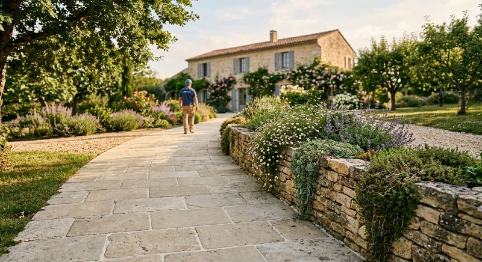

L’entreprise · Brunoy (91)
Une entreprise d’aménagement paysager à Brunoy
D&F Paysages exerce dans le secteur des services d’aménagement paysager, depuis Brunoy, en Essonne.

Repères
Les informations de référence
- Secteur d’activité : services d’aménagement paysager
- Siège : Brunoy (Essonne, 91)
- Dirigeant : Victor Jorge
Suite
Découvrir les prestations
Création, aménagement et entretien d’espaces verts.